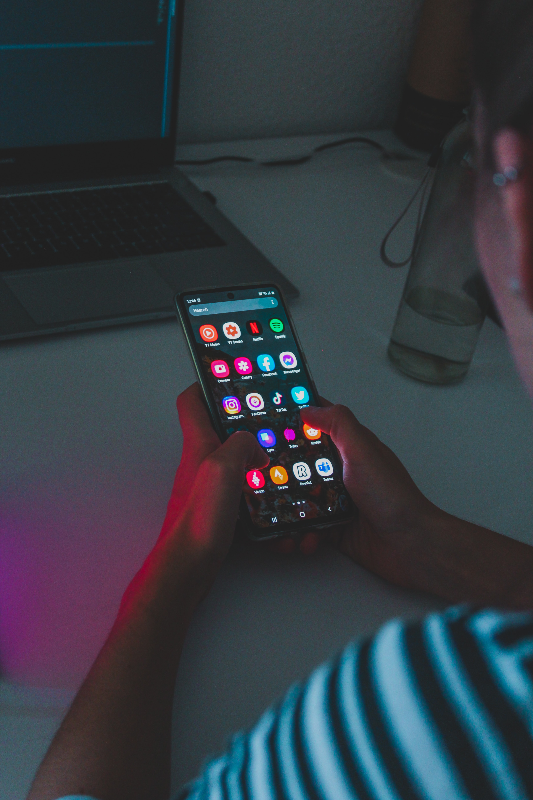

ABOUT
Social media has grown in popularity throughout the decade and has become a significant part of people’s lives. It is both an escape from reality and a way to connect with others in your life and around the world.
With Instagram, Facebook, and Tiktok growing in popularity, they have brought upon positive experiences and questionable effects on its users. Moreso, users and scientists are questioning the impact social media has on adolescents’ mental, physical, and emotional well-being.
Adolescence

During adolescence, there is an increase in social validation and peer evaluation. Social media introduces a new method and experience in indulging in these needs: constant online availability, oversharing personal information (permanently online), and peer feedback through likes, views, and comments.
While it seems harmless, it is quite the opposite. Social media has
The Stats
Between 2012 and 2015, there was a
21%
increase in depression in boys and
50%
increase in depression in girls
92%
Of teens and young adults owned a smartphone by 2015.
But, as smartphone use increased, so did feelings of depression. In a 2017 study with 8th to 12th graders, they found high levels of despressive symptoms increased by
33%
between 2010 and 2015.
And it’s only gotten worse.
Child suicide rates increased by up to
150%
and self-harm by girls ages 10 to 14

Sadly, it is an easy access for youth to experience negative behaviours and ideation. These behaviours include cyberbullying, social exclusion/online conflict, coming across risky content, experiencing comparison, oversharing, and wasting hours on social media.